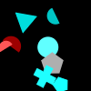
(1)
The smaller red shape is a semicircle.
The smallest red shape is a semicircle.
The smallest pentagon is cyan.
The upper pentagon is cyan.
The darkest red shape is a semicircle.
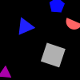
(2)
The lowermost triangle is yellow.
The upper triangle is blue.
The smallest triangle is magenta.
The blue shape closer to the square is a triangle.
The leftmost blue shape is a triangle.
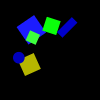
(3)
The smaller green shape is a circle.
The smallest square is yellow.
The smallest green shape is a circle.
The biggest green shape is a rectangle.
The lowermost square is cyan.
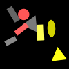
(4)
The uppermost red shape is a rectangle.
The rightmost triangle is yellow.
The leftmost yellow shape is a cross.
The red shape farther from the ellipse is a circle.
The right triangle is gray.

(5)
The gray shape closer to the magenta shape is a rectangle.
The gray shape farther from the pentagon is a cross.
The left gray shape is a semicircle.
The left gray shape is a square.
The right ellipse is green.
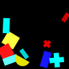
(6)
The left yellow shape is a semicircle.
The left yellow shape is a rectangle.
The rightmost cross is gray.
The biggest cross is red.
The upper yellow shape is a pentagon.
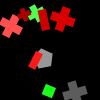
(7)
The lower rectangle is gray.
The right gray shape is a cross.
The lower rectangle is red.
The red shape farthest from the gray pentagon is a square.
The right green shape is a circle.
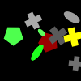
(8)
The darkest ellipse is green.
The smallest gray shape is a cross.
The leftmost pentagon is green.
The leftmost ellipse is gray.
The smallest gray shape is a cross.
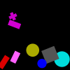
(9)
The darkest rectangle is magenta.
The rightmost circle is cyan.
The lowermost magenta shape is a cross.
The circle farthest from the red rectangle is yellow.
The rectangle closest to the gray square is red.
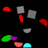
(10)
The right square is cyan.
The ellipse farther from the magenta semicircle is red.
The smaller square is gray.
The lower ellipse is green.
The uppermost red shape is a semicircle.
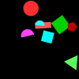
(11)
The lower semicircle is magenta.
The right square is green.
The left cyan shape is a triangle.
The smallest semicircle is green.
The darkest red shape is a pentagon.
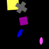
(12)
The magenta shape farthest from the cross is an ellipse.
The smallest square is yellow.
The lightest magenta shape is an ellipse.
The rightmost square is yellow.
The lowermost square is yellow.
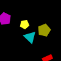
(13)
The smaller yellow shape is a rectangle.
The yellow shape closer to the magenta pentagon is a triangle.
The lower yellow shape is a pentagon.
The upper yellow shape is a cross.
The leftmost yellow shape is a pentagon.
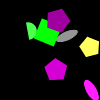
(14)
The lightest pentagon is magenta.
The leftmost green shape is a square.
The lowermost pentagon is blue.
The lighter green shape is a square.
The lower ellipse is green.
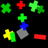
(15)
The rightmost green shape is a cross.
The uppermost red shape is a cross.
The leftmost green shape is a cross.
The uppermost red shape is a square.
The left rectangle is green.
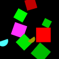
(16)
The darkest semicircle is cyan.
The square farthest from the yellow semicircle is cyan.
The lighter red shape is a square.
The leftmost red shape is a square.
The leftmost semicircle is gray.
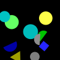
(17)
The circle closest to the square is cyan.
The rightmost green shape is a circle.
The bigger cyan shape is an ellipse.
The rightmost cyan shape is a circle.
The lowermost gray shape is a semicircle.
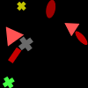
(18)
The bigger triangle is red.
The biggest red shape is an ellipse.
The rightmost triangle is gray.
The red shape farthest from the yellow cross is a triangle.
The triangle farther from the rectangle is green.
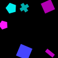
(19)
The biggest pentagon is red.
The lower pentagon is magenta.
The uppermost square is red.
The darkest cyan shape is a pentagon.
The upper square is magenta.
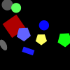
(20)
The smallest green shape is a pentagon.
The leftmost blue shape is a pentagon.
The uppermost pentagon is blue.
The pentagon closest to the gray circle is yellow.
The right gray shape is a circle.
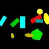
(21)
The smaller green shape is a pentagon.
The left green shape is a rectangle.
The leftmost rectangle is cyan.
The lower green shape is a rectangle.
The lightest ellipse is cyan.
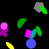
(22)
The darkest magenta shape is an ellipse.
The circle farther from the magenta square is cyan.
The biggest circle is blue.
The lower circle is blue.
The lower circle is magenta.
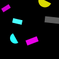
(23)
The bigger magenta shape is a square.
The right cyan shape is a semicircle.
The biggest magenta shape is a rectangle.
The uppermost magenta shape is a semicircle.
The left semicircle is cyan.
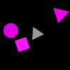
(24)
The bigger triangle is magenta.
The uppermost magenta shape is a cross.
The biggest triangle is gray.
The triangle farthest from the square is magenta.
The lower triangle is magenta.
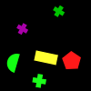
(25)
The lightest cross is green.
The rightmost green shape is a semicircle.
The green shape farthest from the pentagon is a semicircle.
The green shape farthest from the pentagon is a pentagon.
The darkest green shape is a cross.
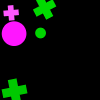
(26)
The smallest green shape is a cross.
The darkest magenta shape is a circle.
The upper magenta shape is a cross.
The upper magenta shape is a circle.
The lighter magenta shape is an ellipse.
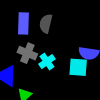
(27)
The darker gray shape is a semicircle.
The right cyan shape is a cross.
The leftmost gray shape is a cross.
The smaller triangle is magenta.
The gray shape closer to the green triangle is a cross.
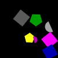
(28)
The rightmost magenta shape is a rectangle.
The lighter gray shape is a square.
The uppermost gray shape is a square.
The leftmost square is gray.
The smaller pentagon is red.
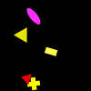
(29)
The leftmost yellow shape is a triangle.
The uppermost triangle is magenta.
The yellow shape farthest from the red triangle is a triangle.
The uppermost triangle is red.
The lightest yellow shape is a rectangle.
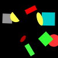
(30)
The rightmost red shape is an ellipse.
The red shape farthest from the semicircle is a semicircle.
The lowermost green shape is a square.
The smaller ellipse is red.
The uppermost green shape is a square.
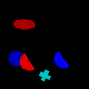
(31)
The red shape farthest from the cross is a cross.
The red shape closest to the cyan cross is a circle.
The red shape closest to the cyan cross is a semicircle.
The blue shape farthest from the cyan shape is an ellipse.
The leftmost blue shape is a circle.
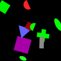
(32)
The red shape closer to the green cross is a square.
The bigger ellipse is green.
The rightmost square is red.
The left red shape is a triangle.
The lowermost square is green.

(33)
The yellow shape closest to the magenta ellipse is a circle.
The darkest yellow shape is a cross.
The uppermost circle is blue.
The leftmost yellow shape is a cross.
The bigger circle is blue.
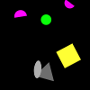
(34)
The lowermost semicircle is yellow.
The upper semicircle is magenta.
The semicircle closer to the triangle is yellow.
The left gray shape is a cross.
The lightest gray shape is an ellipse.
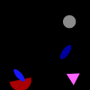
(35)
The uppermost ellipse is magenta.
The blue shape closest to the gray shape is a circle.
The lightest ellipse is blue.
The lightest blue shape is a circle.
The uppermost blue shape is a circle.
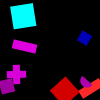
(36)
The uppermost square is blue.
The rightmost red shape is a rectangle.
The darker red shape is a square.
The uppermost magenta shape is a triangle.
The darker rectangle is red.
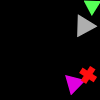
(37)
The lowermost triangle is green.
The leftmost triangle is magenta.
The biggest triangle is green.
The uppermost triangle is green.
The smallest triangle is green.
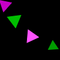
(38)
The uppermost triangle is magenta.
The lower green shape is a triangle.
The left green shape is a triangle.
The right magenta shape is a triangle.
The darker magenta shape is a rectangle.
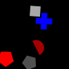
(39)
The right gray shape is a square.
The lower gray shape is a square.
The leftmost pentagon is magenta.
The lowermost red shape is a pentagon.
The red shape closer to the gray square is a square.
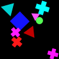
(40)
The lowermost cross is magenta.
The lighter cyan shape is a triangle.
The cross closest to the blue square is blue.
The rightmost triangle is magenta.
The cyan shape farther from the green circle is a triangle.
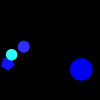
(41)
The uppermost circle is cyan.
The uppermost circle is blue.
The lightest circle is blue.
The leftmost blue shape is a pentagon.
The leftmost blue shape is a circle.
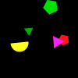
(42)
The pentagon closest to the semicircle is yellow.
The leftmost green shape is a triangle.
The smallest triangle is green.
The rightmost triangle is yellow.
The right triangle is gray.
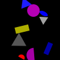
(43)
The lowermost blue shape is a rectangle.
The lighter gray shape is a circle.
The magenta shape farthest from the yellow shape is an ellipse.
The gray shape farther from the magenta semicircle is a triangle.
The lower rectangle is yellow.
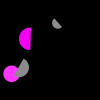
(44)
The bigger gray shape is a semicircle.
The bigger gray shape is a pentagon.
The darker magenta shape is a semicircle.
The upper gray shape is a semicircle.
The lower magenta shape is a circle.
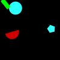
(45)
The cyan shape farthest from the green shape is a pentagon.
The uppermost cyan shape is a circle.
The uppermost cyan shape is a semicircle.
The right cyan shape is a pentagon.
The cyan shape farthest from the green rectangle is a circle.
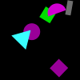
(46)
The right square is green.
The lightest magenta shape is a semicircle.
The lightest magenta shape is a semicircle.
The right square is gray.
The lowermost magenta shape is a square.
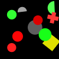
(47)
The darker gray shape is a semicircle.
The red shape farthest from the gray circle is a circle.
The darkest gray shape is a semicircle.
The leftmost green shape is a circle.
The lower gray shape is a circle.
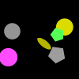
(48)
The uppermost pentagon is gray.
The lower pentagon is green.
The yellow shape farther from the magenta circle is an ellipse.
The circle closest to the green pentagon is magenta.
The biggest circle is red.
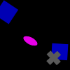
(49)
The square farther from the cross is blue.
The rightmost square is blue.
The left blue shape is an ellipse.
The blue shape farther from the gray cross is a square.
The biggest square is blue.
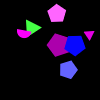
(50)
The smaller blue shape is a pentagon.
The rightmost triangle is green.
The upper blue shape is an ellipse.
The rightmost pentagon is blue.
The lightest blue shape is a pentagon.
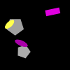
(51)
The smallest gray shape is a pentagon.
The pentagon farther from the yellow ellipse is gray.
The smallest pentagon is gray.
The gray shape farthest from the yellow shape is a rectangle.
The lower magenta shape is a rectangle.
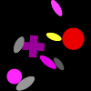
(52)
The upper circle is magenta.
The magenta shape closest to the yellow ellipse is a triangle.
The ellipse closest to the red circle is magenta.
The left circle is yellow.
The smallest circle is red.
(53)
The uppermost triangle is blue.
The leftmost cyan shape is a rectangle.
The darkest cyan shape is a triangle.
The triangle farthest from the yellow semicircle is cyan.
The lightest cyan shape is a pentagon.
(54)
The leftmost yellow shape is an ellipse.
The upper green shape is an ellipse.
The rightmost ellipse is cyan.
The lowermost yellow shape is an ellipse.
The uppermost pentagon is red.
(55)
The cyan shape farthest from the green shape is a cross.
The upper cyan shape is a cross.
The smaller cyan shape is a circle.
The cyan shape farther from the green circle is a cross.
The bigger cyan shape is a cross.
(56)
The triangle farthest from the yellow shape is magenta.
The leftmost triangle is magenta.
The right magenta shape is a circle.
The lowermost magenta shape is a triangle.
The uppermost red shape is a triangle.
(57)
The lower circle is gray.
The upper cross is red.
The uppermost green shape is a triangle.
The darkest green shape is an ellipse.
The cyan shape farthest from the green cross is a rectangle.
(58)
The smallest green shape is a semicircle.
The smallest green shape is a semicircle.
The green shape farthest from the yellow shape is a semicircle.
The uppermost green shape is a square.
The uppermost green shape is an ellipse.
(59)
The left green shape is a rectangle.
The lighter green shape is a rectangle.
The leftmost rectangle is green.
The darker green shape is a rectangle.
The smallest square is yellow.
(60)
The upper cyan shape is a square.
The darkest red shape is a square.
The upper cyan shape is a square.
The lightest cyan shape is a square.
The square closest to the magenta ellipse is cyan.
(61)
The left blue shape is a pentagon.
The rightmost blue shape is a cross.
The rightmost semicircle is cyan.
The bigger blue shape is a pentagon.
The uppermost blue shape is a pentagon.
(62)
The lowermost cyan shape is a circle.
The rightmost magenta shape is a pentagon.
The bigger rectangle is green.
The lighter green shape is a semicircle.
The biggest cyan shape is a rectangle.
(63)
The darker cyan shape is a pentagon.
The lower cyan shape is an ellipse.
The darker cyan shape is a circle.
The leftmost ellipse is green.
The ellipse farthest from the cyan circle is cyan.
(64)
The lighter yellow shape is a pentagon.
The darkest blue shape is a triangle.
The rightmost cross is blue.
The uppermost cross is red.
The blue shape farthest from the pentagon is a cross.
(65)
The darker red shape is an ellipse.
The lightest red shape is a circle.
The lower red shape is a semicircle.
The uppermost square is gray.
The square farther from the red semicircle is yellow.
(66)
The rightmost gray shape is a square.
The bigger ellipse is magenta.
The leftmost gray shape is an ellipse.
The ellipse farthest from the green square is magenta.
The smallest ellipse is magenta.
(67)
The smallest square is magenta.
The lower cyan shape is a triangle.
The bigger square is magenta.
The uppermost square is blue.
The rightmost magenta shape is a square.
(68)
The upper triangle is red.
The circle farther from the square is red.
The circle farther from the square is yellow.
The smaller circle is magenta.
The leftmost magenta shape is a square.
(69)
The lighter red shape is a rectangle.
The uppermost yellow shape is an ellipse.
The smaller circle is green.
The left red shape is a square.
The yellow shape closest to the blue shape is a rectangle.
(70)
The smallest square is gray.
The uppermost square is blue.
The uppermost square is green.
The rightmost square is green.
The gray shape closest to the cyan shape is a rectangle.
(71)
The rightmost cyan shape is a circle.
The darkest green shape is a cross.
The left cyan shape is a circle.
The biggest cross is gray.
The lower cross is green.
(72)
The lighter pentagon is red.
The smallest pentagon is cyan.
The lower pentagon is yellow.
The lower blue shape is a pentagon.
The bigger pentagon is blue.
(73)
The lowermost square is blue.
The square farthest from the rectangle is yellow.
The smallest square is gray.
The lower square is blue.
The gray shape farther from the yellow circle is a triangle.
(74)
The bigger triangle is red.
The bigger triangle is gray.
The uppermost triangle is red.
The biggest triangle is gray.
The right triangle is red.
(75)
The left triangle is green.
The triangle farther from the ellipse is green.
The bigger triangle is yellow.
The lower triangle is yellow.
The triangle farther from the ellipse is green.
(76)
The upper triangle is magenta.
The darkest pentagon is magenta.
The triangle farther from the yellow shape is green.
The right circle is magenta.
The upper triangle is magenta.
(77)
The rightmost cross is magenta.
The right gray shape is a pentagon.
The upper gray shape is a cross.
The gray shape farther from the yellow shape is a square.
The cross farthest from the gray square is blue.
(78)
The bigger blue shape is a circle.
The lowermost square is red.
The smaller blue shape is a semicircle.
The rightmost blue shape is a square.
The lightest gray shape is a square.
(79)
The darkest yellow shape is a cross.
The darkest green shape is an ellipse.
The lowermost green shape is a rectangle.
The leftmost green shape is a circle.
The darker green shape is a semicircle.
(80)
The smallest blue shape is a rectangle.
The darkest blue shape is a triangle.
The darkest blue shape is an ellipse.
The rightmost blue shape is a square.
The lowermost blue shape is a triangle.
(81)
The rightmost magenta shape is a rectangle.
The magenta shape closer to the rectangle is a pentagon.
The rightmost magenta shape is an ellipse.
The lower magenta shape is a semicircle.
The lowermost magenta shape is a semicircle.
(82)
The lightest green shape is a square.
The uppermost green shape is a circle.
The uppermost green shape is a semicircle.
The rightmost green shape is an ellipse.
The leftmost green shape is a rectangle.
(83)
The smallest red shape is an ellipse.
The left green shape is a rectangle.
The leftmost red shape is a rectangle.
The bigger circle is red.
The darkest ellipse is red.
(84)
The smaller red shape is a rectangle.
The bigger gray shape is a square.
The lighter cross is red.
The leftmost cross is red.
The biggest cross is blue.

(85)
The uppermost cyan shape is a cross.
The rightmost cyan shape is a cross.
The lighter green shape is an ellipse.
The darker green shape is a square.
The smaller pentagon is green.
(86)
The rightmost magenta shape is a semicircle.
The smaller rectangle is yellow.
The darkest magenta shape is an ellipse.
The rightmost yellow shape is a cross.
The uppermost magenta shape is an ellipse.
(87)
The lower red shape is a cross.
The smallest triangle is yellow.
The upper ellipse is yellow.
The leftmost ellipse is yellow.
The bigger triangle is yellow.
(88)
The uppermost gray shape is an ellipse.
The gray shape farthest from the magenta shape is an ellipse.
The leftmost gray shape is an ellipse.
The uppermost gray shape is an ellipse.
The lowermost gray shape is an ellipse.
(89)
The lower blue shape is a rectangle.
The lighter blue shape is a rectangle.
The left circle is red.
The bigger circle is red.
The leftmost blue shape is a circle.
(90)
The green shape closer to the red shape is a rectangle.
The smaller semicircle is green.
The leftmost green shape is a cross.
The uppermost green shape is an ellipse.
The right green shape is a semicircle.
(91)
The biggest pentagon is blue.
The lower pentagon is gray.
The bigger pentagon is red.
The gray shape farther from the blue shape is a circle.
The smaller pentagon is magenta.
(92)
The bigger circle is magenta.
The square closest to the gray semicircle is magenta.
The rightmost magenta shape is a circle.
The leftmost magenta shape is a circle.
The smaller square is magenta.
(93)
The square closest to the yellow rectangle is yellow.
The lower rectangle is yellow.
The square farthest from the green circle is magenta.
The lowermost rectangle is cyan.
The darkest square is cyan.
(94)
The biggest triangle is green.
The right semicircle is yellow.
The leftmost triangle is green.
The left triangle is gray.
The semicircle closest to the gray triangle is gray.
(95)
The lowermost rectangle is green.
The bigger cross is green.
The rightmost green shape is a cross.
The lower cross is blue.
The rightmost green shape is a cross.
(96)
The square farthest from the blue circle is red.
The lowermost square is green.
The cyan shape closest to the circle is a square.
The cyan shape closest to the circle is a pentagon.
The cyan shape closer to the circle is a cross.
(97)
The lowermost red shape is a semicircle.
The ellipse farther from the gray shape is yellow.
The red shape farther from the gray shape is a semicircle.
The rightmost ellipse is yellow.
The uppermost square is gray.
(98)
The lighter yellow shape is a rectangle.
The biggest gray shape is a circle.
The darkest yellow shape is a square.
The biggest square is gray.
The rightmost semicircle is gray.
(99)
The triangle closer to the red circle is red.
The yellow shape farthest from the red circle is a circle.
The lighter triangle is yellow.
The lowermost square is cyan.
The rightmost red shape is a square.
(100)
The lowermost blue shape is an ellipse.
The upper rectangle is blue.
The smaller pentagon is blue.
The smallest pentagon is cyan.
The lightest blue shape is a semicircle.